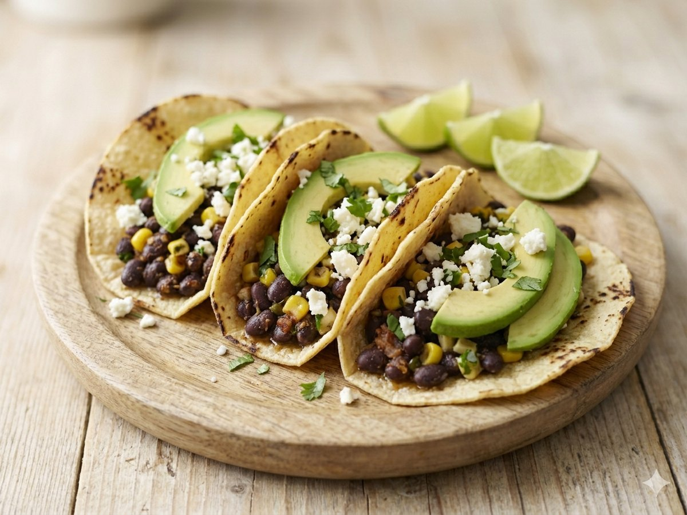

15-Minute Black Bean Tacos
Smoky, weeknight-fast tacos that happen to be vegetarian.
15 min · Serves 4 · Mise Kitchen

Ingredients
- 2 cans black beans, drained
- 1 tablespoon olive oil
- 1 teaspoon cumin
- 1 teaspoon smoked paprika
- 8 corn tortillas
- 1 avocado, sliced
- 1/2 cup crumbled queso fresco
- 1/4 cup chopped cilantro
- 1 lime, cut into wedges
Directions
- Warm the olive oil in a skillet and add the beans, cumin, and paprika.
- Cook, mashing lightly, until hot and slightly thickened, about 5 minutes.
- Char the tortillas over a flame or in a dry pan.
- Fill with beans, avocado, queso fresco, and cilantro, and serve with lime.
An original recipe from Mise Kitchen. Free to save and cook.